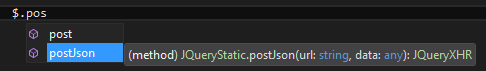

POST-ing JSON to an ASP.NET Web API controller
So you want to post some JSON to an ASP.NET Web API controller?
I bet you’ve written this more than you wanted to:
$.ajax({
type: "POST",
url: url,
data: JSON.stringify(data),
dataType: "json",
contentType: "application/json; charset=utf-8"
});
I hate that work-around where you specify all sorts of stuff that you don’t really want to specify (like dataType, contentType, etc…). This is all required because the friendlier $.post(...) will send your data in a Form encoded way.
So here is a little extension you can put in your JavaScript to create a $.postJson function on the jQuery object. Handy!
$.extend({
postJson: function (url, data) {
return jQuery.ajax({
type: "POST",
url: url,
data: JSON.stringify(data),
dataType: "application/json",
contentType: "application/json; charset=utf-8"
});
}
});
Now you can write $.postJson(…) and it will send your data as JSON to the server with all the bells and whistles to tell the server that JSON is being sent.
This is all very nice, but I use TypeScript for all my projects (and so should you!) and I want Intellisense to tell me about the new function. To let TypeScript know that our new function is available, we need to extend the interface that is described in jQuery.d.ts. The jQueryStatic interface to be specific, which contains the regular post function.
Here is how you can accomplish this. Create a new TypeScript type file that will hold the new interface. Make sure it ends with .d.ts so that it is easily recognized as a TypeScript definition file.
Reference the existing jquery.d.ts file in the new .d.ts file and create the interface:
/// <reference path="../jquery/jquery.d.ts" />
interface JQueryStatic {
}
Next step is adding our new postJson function to it. It has two arguments: url and data and returns a jQuery XML HTTP Request so the signature will look like this in TypeScript:
postJson(url: string, data: any): JQueryXHR;
Turning the full interface into this:
/// <reference path="../jquery/jquery.d.ts" />
interface JQueryStatic {
postJson(url: string, data: any): JQueryXHR;
}
There is one thing left and that is replacing all the references to the old jquery.d.ts file (/// <reference path="../jquery/jquery.d.ts" />) and replace them with the new extended definition.
So this:
/// <reference path="../jquery/jquery.d.ts" />
Will become this:
/// <reference path="../../scripts/typings/custom/#YOURNEWLYCREATEDDTSFILE#.d.ts" />
In all .ts files where you want to use your new $.postJson(...) function.
Because we extended the existing jQuery definition, everything still works as expected and your new function is now strong-typed as well and opens the door for more advanced postJson functions if you want.

So in the end we turned a common copy-paste piece of code into a nice helper method that we can maintain in one single place with all the benefits of TypeScripts strong typing.